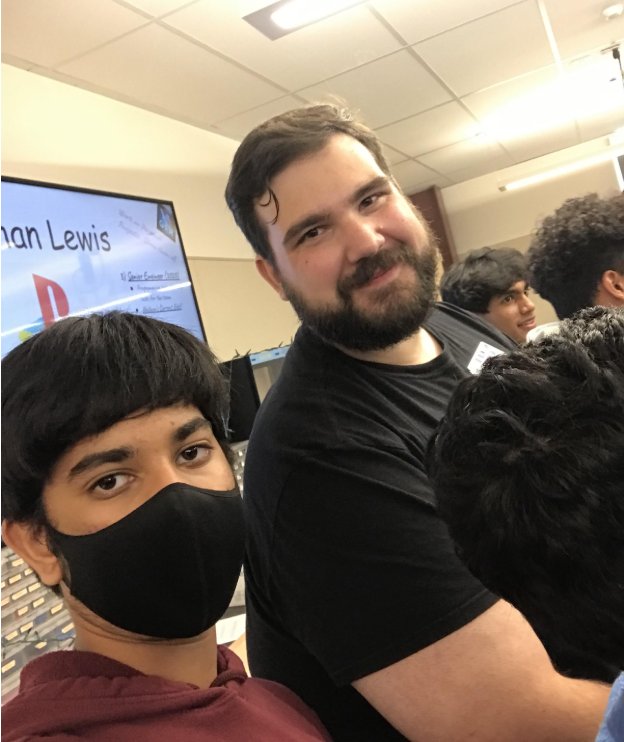
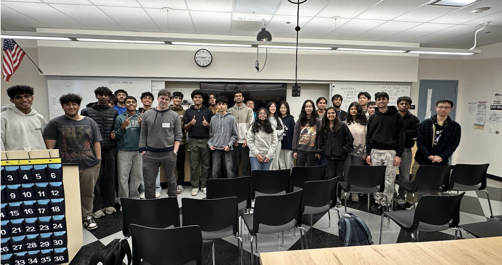
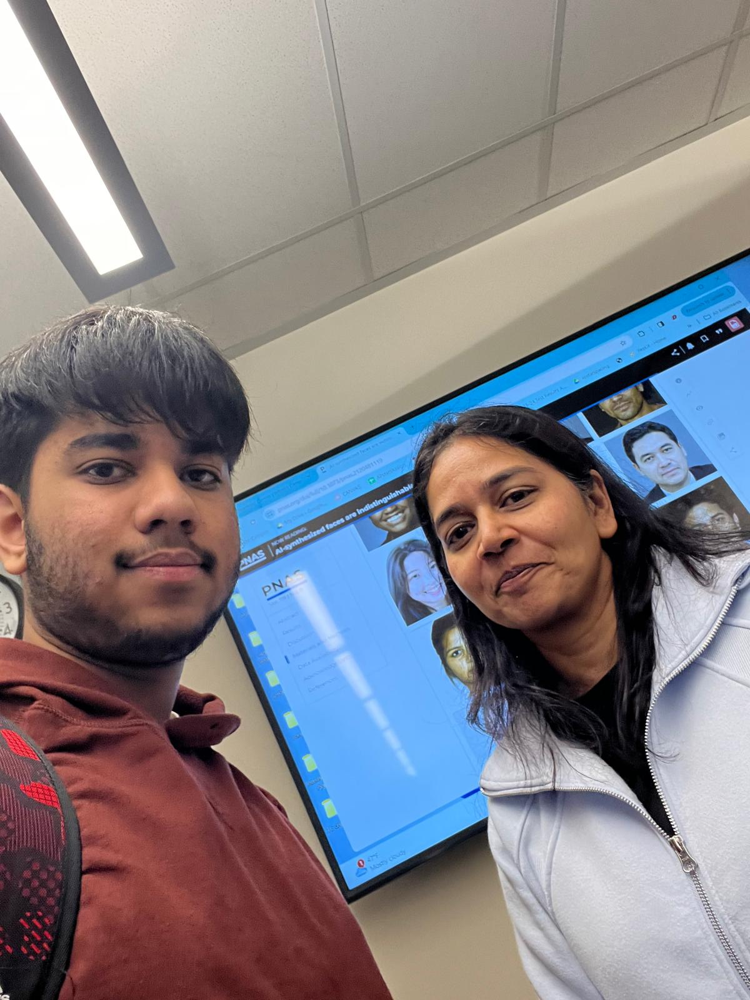

My Career

During my time in high school, I explored several different careers and fields, and the field that interested me the most was computer science. Everybody uses several different apps, softwares, and pieces of technology every day. The idea of being able to make my own creations and put them out for everyone to use was something that was very interesting for me. I thought about how my creations could help solve problems around the world. In my freshman seminar class, I used online websites to further explore the field of Computer Science and the different job opportunities within the field. This research provided several different job descriptions for the jobs within Computer Science, which helped me decide which jobs interested me the most and what companies I want to work for in the future. I have also participated in several volunteering events, including helping with building a greenhouse. Although this is not related to my career, it taught me many valuable lessons that I can use in a Computer Science job. For example, we had to complete a certain amount of tasks in the time that we had, and we had to work together to complete it because the tasks were too big for us to do by ourselves. This required us to divide the jobs, make plans, and execute them with the help of our peers. My other career research came from going to meetings where guest speakers are brought in to tell us about their experiences. Below are some of the guest speakers that I have met, along with key takeaways and the lessons that I learned from them.

Nathaniel Lewis
This guest speaker was a DHS alumnus who currently works at Sony PlayStation, I gained valuable insights into his career journey. He shared how he discovered a job opening at PlayStation and the steps he took to secure the position. Additionally, he provided us with practical advice on how to find job opportunities in the future. He also gave us a glimpse into his daily responsibilities and offered a detailed overview of what a career at PlayStation entails.

Ken Morris
I had the opportunity to meet Ken Morris, the founder and CEO of Chordify, and the experience was incredibly insightful for my future. He shared valuable lessons on what it takes to succeed in any industry, emphasizing the qualities that make both a successful employee and a thriving business owner. Morris also walked us through the journey of starting his company and the challenges he faced along the way. As someone with aspirations of starting my own business, his advice resonated deeply with me and served as a powerful source of motivation to pursue my goals.

Noel Moldvai
With the help of this presentation, this guest speaker spoke to us about how to take your ideas and turn them into a viable business idea. He walked us through the various types of companies you can start and shared valuable insights into the realities of life as a business owner.

James Moorehead
This speaker delivered a presentation on the art of presenting, and it is something I will remember for a long time because it taught us valuable skills that go beyond the classroom. I learned that strong presentation skills aren’t just helpful, they’re necessary for effectively sharing ideas and making an impact. He showed us how to keep an audience engaged, how preparation leads to confidence, and even how to manage and hide nervousness while speaking. These insights gave me a new perspective on public speaking and made me feel more equipped to present myself professionally in the future.

Todd Farrell
This guest speaker gave us a fascinating presentation on artifical intelligence, focusing specifically on its limitations and how it can be manipulated. He demonstrated this using gandalf.lakera.ai, which is used to show how AI models can be tricked into performing tasks outside their original parameters. It was interesting to see how even advanced AI systems can be vulnerable to manipulation. This helped me understand the importance of responsible development and safeguards to prevent the misuse of AI. It also highlighted the fact that AI still has flaws that need to be addressed carefully.

Lakshmi Hanspal
This guest speaker is the CFO of Amazon, and she spoke to us about the effects of AI. She discussed how AI is transforming industries, reshaping job roles, and pushing companies to adapt to rapidly changing technology. What stood out to me most was her perspective on how the workforce itself is evolving, and how many jobs will look very different in the near future. This shift comes with both challenges and opportunities, and her insights highlighted how important it is to understand these changes in order to successfully navigate and contribute to the future workplace.